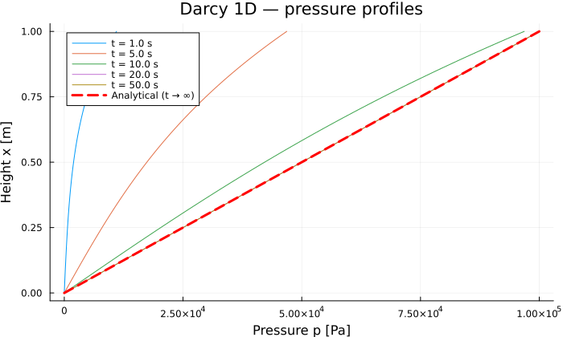

1D Darcy Column
Source:
examples/darcy_column/run.jlReference solution: linear single-phase Darcy flow.
Physical problem
We simulate the pressurization of a vertical saturated soil column. The pore pressure $p$ [Pa] is the unknown.
PDE:
\[S \frac{\partial p}{\partial t} - \nabla \cdot \left(\frac{K}{\mu} \nabla p\right) = 0\]
Boundary conditions:
| Boundary | Condition |
|---|---|
| $x = 0$ (bottom) | Dirichlet $p = 0$ |
| $x = L$ (top) | Dirichlet $p = p_\text{top} \cdot r(t)$ (ramp) |
The ramp $r(t) = \min(1,\, t / t_c)$ avoids the jump between the zero initial condition and the imposed condition.
Analytical steady-state solution:
\[p(x) = p_\text{top} \cdot \frac{x}{L}\]
Parameters
| Symbol | Value | Unit | Description |
|---|---|---|---|
| $K$ | $10^{-12}$ | m² | Intrinsic permeability |
| $\mu$ | $10^{-3}$ | Pa·s | Dynamic viscosity |
| $S$ | $10^{-8}$ | Pa⁻¹ | Storage coefficient |
| $L$ | $1.0$ | m | Column length |
| $p_\text{top}$ | $10^5$ | Pa | Pressure imposed at the top |
Characteristic diffusion time:
\[t_c = \frac{S \mu L^2}{K} = 10 \text{ s}\]
PoroMechanics.jl implementation
Model definition
The model is a subtype of AbstractPoroModel. Parameters are grouped in a struct with default values (Base.@kwdef).
using PoroMechanics
using VoronoiFVM
using ExtendableGrids
using Plots
using Printf
Base.@kwdef struct DarcyModel <: AbstractPoroModel
K :: Float64 = 1e-12 # intrinsic permeability [m²]
mu :: Float64 = 1e-3 # dynamic viscosity [Pa·s]
S :: Float64 = 1e-8 # storage coefficient [Pa⁻¹]
L :: Float64 = 1.0 # column length [m]
p_top :: Float64 = 1.0e5 # pressure imposed at the top [Pa]
end
PoroMechanics.nspecies(::DarcyModel) = 1
PoroMechanics.species_names(::DarcyModel) = [:p]VoronoiFVM callbacks
The three callbacks take 5 arguments (the model in 4th position); unused arguments are annotated ::Any.
# Darcy flux: f = (K/μ) (p₁ − p₂)
function PoroMechanics.flux!(f, u, ::Any, m::DarcyModel, ::Any)
f[1] = (m.K / m.mu) * (u[1, 1] - u[1, 2])
end
# Storage term: S · p
function PoroMechanics.storage!(f, u, ::Any, m::DarcyModel, ::Any)
f[1] = m.S * u[1]
end
# Boundary conditions: Dirichlet at both ends with a time ramp
function PoroMechanics.bcondition!(f, u, bnode, m::DarcyModel, ::Any)
t_c = m.S * m.mu * m.L^2 / m.K
p_bc = m.p_top * min(1.0, bnode.time / t_c)
boundary_dirichlet!(f, u, bnode; species = 1, region = 1, value = 0.0)
boundary_dirichlet!(f, u, bnode; species = 1, region = 2, value = p_bc)
endSimulation
VoronoiFVM expects 4-argument callbacks. We wrap them in closures that inject the model:
m = DarcyModel()
t_c = m.S * m.mu * m.L^2 / m.K
grid = simplexgrid(range(0.0, m.L; length = 101))
_flux!(f, u, edge, data) = PoroMechanics.flux!(f, u, edge, m, data)
_storage!(f, u, node, data) = PoroMechanics.storage!(f, u, node, m, data)
_bcondition!(f, u, node, data) = PoroMechanics.bcondition!(f, u, node, m, data)
sys = VoronoiFVM.System(grid;
flux = _flux!,
storage = _storage!,
bcondition = _bcondition!,
species = [1])
inival = unknowns(sys; inival = 0.0)
ctrl = VoronoiFVM.SolverControl(;
Δt = t_c / 20,
Δt_max = 500.0 / 10,
Δu_opt = m.p_top / 10,
store_all = true,
reltol = 1e-6,
verbose = false,
)
tsol = solve(sys; inival, times = (0.0, 500.0), control = ctrl)
@printf("Time steps taken: %d\n", length(tsol.t) - 1)WARNING: [a]llocations in assembly loop: cells: 1500, bfaces: 4
WARNING: [a]llocations in assembly loop: cells: 1500, bfaces: 4
WARNING: [a]llocations in assembly loop: cells: 1500, bfaces: 4
WARNING: [a]llocations in assembly loop: cells: 1500, bfaces: 4
WARNING: [a]llocations in assembly loop: cells: 1500, bfaces: 4
WARNING: [a]llocations in assembly loop: cells: 1500, bfaces: 4
WARNING: [a]llocations in assembly loop: cells: 1500, bfaces: 4
WARNING: [a]llocations in assembly loop: cells: 1500, bfaces: 4
WARNING: [a]llocations in assembly loop: cells: 1500, bfaces: 4
WARNING: [a]llocations in assembly loop: cells: 1500, bfaces: 4
WARNING: [a]llocations in assembly loop: cells: 1500, bfaces: 4
WARNING: [a]llocations in assembly loop: cells: 1500, bfaces: 4
WARNING: [a]llocations in assembly loop: cells: 1500, bfaces: 4
WARNING: [a]llocations in assembly loop: cells: 1500, bfaces: 4
WARNING: [a]llocations in assembly loop: cells: 1500, bfaces: 4
WARNING: [a]llocations in assembly loop: cells: 1500, bfaces: 4
WARNING: [a]llocations in assembly loop: cells: 1500, bfaces: 4
WARNING: [a]llocations in assembly loop: cells: 1500, bfaces: 4
WARNING: [a]llocations in assembly loop: cells: 1500, bfaces: 4
WARNING: [a]llocations in assembly loop: cells: 1500, bfaces: 4
WARNING: [a]llocations in assembly loop: cells: 1500, bfaces: 4
WARNING: [a]llocations in assembly loop: cells: 1500, bfaces: 4
WARNING: [a]llocations in assembly loop: cells: 1500, bfaces: 4
WARNING: [a]llocations in assembly loop: cells: 1500, bfaces: 4
WARNING: [a]llocations in assembly loop: cells: 1500, bfaces: 4
WARNING: [a]llocations in assembly loop: cells: 1500, bfaces: 4
WARNING: [a]llocations in assembly loop: cells: 1500, bfaces: 4
WARNING: [a]llocations in assembly loop: cells: 1500, bfaces: 4
WARNING: [a]llocations in assembly loop: cells: 1500, bfaces: 4
WARNING: [a]llocations in assembly loop: cells: 1500, bfaces: 4
WARNING: [a]llocations in assembly loop: cells: 1500, bfaces: 4
WARNING: [a]llocations in assembly loop: cells: 1500, bfaces: 4
WARNING: [a]llocations in assembly loop: cells: 1500, bfaces: 4
WARNING: [a]llocations in assembly loop: cells: 1500, bfaces: 4
WARNING: [a]llocations in assembly loop: cells: 1500, bfaces: 4
WARNING: [a]llocations in assembly loop: cells: 1500, bfaces: 4
WARNING: [a]llocations in assembly loop: cells: 1500, bfaces: 4
WARNING: [a]llocations in assembly loop: cells: 1500, bfaces: 4
WARNING: [a]llocations in assembly loop: cells: 1500, bfaces: 4
WARNING: [a]llocations in assembly loop: cells: 1500, bfaces: 4
Time steps taken: 40Results
Convergence to the analytical solution
xcoords = grid[Coordinates][1, :]
p_ref = m.p_top .* xcoords ./ m.L
p_final = tsol[1, :, end]
err_L2 = sqrt(sum((p_final .- p_ref) .^ 2) / 100)
err_Linf = maximum(abs.(p_final .- p_ref))
@printf("L2 error : %.2e Pa\n", err_L2)
@printf("L∞ error : %.2e Pa\n", err_Linf)
err_Linf < 0.01 * m.p_top ? println("✓ err < 1 %") : println("✗ err > 1 %")L2 error : 2.62e-12 Pa
L∞ error : 7.28e-12 Pa
✓ err < 1 %Pressure profiles over time
p = plot(;
xlabel = "Pressure p [Pa]",
ylabel = "Height x [m]",
title = "Darcy 1D — pressure profiles",
legend = :topleft,
size = (700, 420))
fracs = [0.1, 0.5, 1.0, 2.0, 5.0]
for frac in fracs
t_req = frac * t_c
it = argmin(abs.(tsol.t .- t_req))
plot!(p, tsol[1, :, it], xcoords;
label = "t = $(round(t_req; sigdigits=2)) s")
end
plot!(p, p_ref, xcoords;
linewidth = 3, color = :red, linestyle = :dash,
label = "Analytical (t → ∞)")
p
Key points
- Simplest model in the package — a single species, linear law, known analytical solution: ideal for validating the
AbstractPoroModel→ closures → VoronoiFVM chain. - Time ramp — avoids IC/BC discontinuities that would force very small time steps at startup.
::Anyfor unused arguments — preferred over_-prefixed names to avoid Julia linter warnings.Δu_opt— set to $p_\text{top}/10$: VoronoiFVM automatically adapts $\Delta t$ so that the maximum pressure variation per step stays below this threshold.